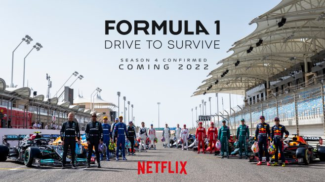

My recommended movies and series while you're waiting for the F1 season
Drive to Survive
February 22, 2023

"Drive to Survive" is a thrilling documentary series that takes viewers behind the scenes of the high-speed world of
Formula One racing. This fast-paced show captures the intensity and drama of the world's most prestigious motorsport,
featuring exclusive footage and interviews with some of the biggest names in the sport.
The series explores the personal and professional lives of drivers, team owners, and crew members as they compete in a
grueling season of races across the globe. From the high-tech garages and pit stops to the adrenaline-fueled races
themselves, "Drive to Survive" provides an intimate look at the ups and downs of life in the fast lane.
Audence score for each season
- DTS s.1: 92%
- DTS s.2: 85%
- DTS s.3: 91%
- DTS s.4: 87%
- DTS s.5: 90%
Rush
January 15, 2023

The 2013 film "Rush" is a biographical drama that tells the gripping true story of the fierce rivalry between Formula
One drivers James Hunt and Niki Lauda during the 1976 racing season. Directed by Ron Howard, the movie is a high-octane
thrill ride that captures the adrenaline and danger of the sport.
Starring Chris Hemsworth as the charismatic British driver James Hunt and Daniel Brühl as the methodical Austrian Niki
Lauda, the film follows the two drivers as they battle for the championship, both on and off the track. The movie is as
much a character study as it is a racing film, exploring the contrasting personalities and approaches of the two drivers
as they push themselves to the limit.
Rotten tomatoes score
88%
Ford vs Ferrari
January 08, 2023

Is a high-octane sports drama that tells the incredible true story of how American automotive designer Carroll Shelby
and British driver Ken Miles teamed up to build a revolutionary race car for Ford and take on Ferrari at the 24 Hours of
Le Mans in 1966.
Starring Matt Damon as Shelby and Christian Bale as Miles, the movie is a thrilling ride that captures the excitement
and danger of the world of motorsports. From the high-tech garages and test tracks to the grueling race itself, "Ford v
Ferrari" is a masterclass in tension and drama.
Rotten tomatoes score
93%
Le Mans: Racing is Everything
December 28th, 2022

Is a six-part documentary series that provides a thrilling behind-the-scenes look at one of the most challenging and
prestigious endurance races in the world: the 24 Hours of Le Mans. The series, which is available on Amazon Prime,
follows the top teams and drivers as they prepare for and compete in the grueling race, which takes place over 24 hours
on the Circuit de la Sarthe in France.
The series offers a fascinating look at the history and tradition of the Le Mans race, as well as the cutting-edge
technology and intense competition that make it such a thrilling event to watch. From the high-tech garages to the race
itself, the series provides an immersive and engaging experience for viewers.
Audence score
79%